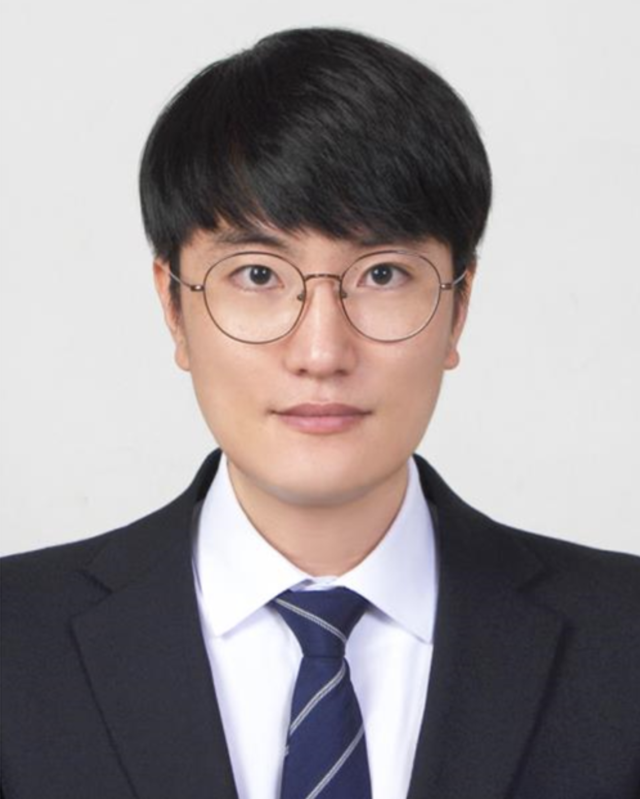

GEUMHWAN CHO
Assistant Professor, Department of Artificial Intelligence Cyber Security (AICS), College of Science & Technology, Korea University Sejong Campus (KUS). I am leading the User-centered Security Laboratory (uselab) at KUS (see Google Scholar).
- Email: geumhwan@korea.ac.kr, geumhwancho@gmail.com
- Office: #207, Sci & Tech Bldg 2
- Tel: +82-44-860-1312
My current research interest is focused on usable security, digital forensic with AI.
I received a Ph.D. from the Security Lab at Sungkyunkwan University, where I conducted my research under Prof. Hyoungshick Kim, focusing on my thesis titled "A Study on Secure and Usable Unlock Methods for Mobile Phones". After completing my Ph.D., I worked as a post-doctoral fellow in the Security Lab and subsequently as a senior researcher at National Security Research Institute (NSR).
As for my academic genealogy, my thesis adviser was Hyoungshick Kim; his was Ross Anderson; then it runs back through Roger Needham, Maurice Wilkes, Jack Ratcliffe, Edward Appleton, Ernest Rutherford, JJ Thomson, Lord Rayleigh, Edward Routh, William Hopkins, Adam Sedgwick, Thomas Jones, Thomas Postlethwaite, Stephen Whisson, Walter Taylor, Roger Smith, Roger Cotes, Isaac Newton, Isaac Barrow, and Vincenzo Viviani to Galileo Galilei.